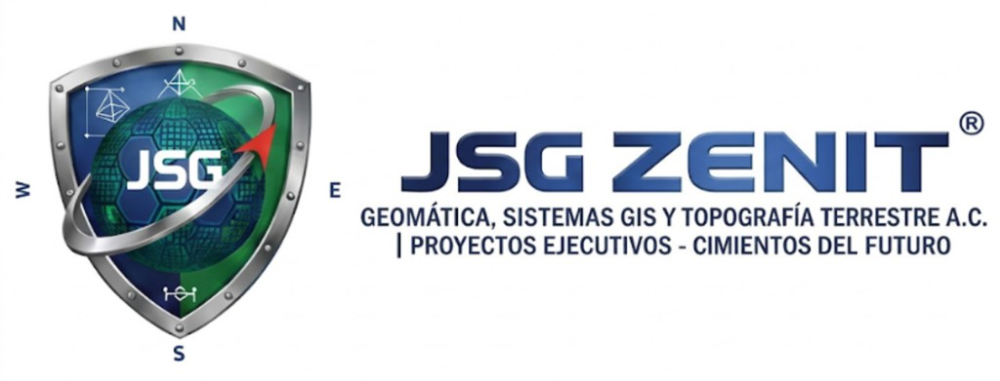

Viento sostenido y rachas
—km/h
Rachas de — km/h

Vigilancia Telemétrica Oficial · Ex-Invest EP93
Ciclón tropical activo
Hora oficial CST · México
--:--:--
Sincronizando segundero
Último reporte · esperando feed
02 · Instrumentación
Cinco lecturas del parte de TRUDY. Unidades en el Sistema Internacional de uso meteorológico.
—km/h
Rachas de — km/h
—km/h
Rumbo —
—mm
Convección activa
—hPa
En vigilancia continua
—°C
Alto potencial energético
03 · Aproximación
El recorrido publicado y la bahía parten del boletín. Pasados 10 minutos, la compuerta 96°W y el quiebre 97°W avanzan a la velocidad de traslación.
—KM
Calculando ortodrómica desde el origen
Pulsar para situar en la carta
—KM
Calculando cruce del meridiano
Alerta máxima · pulsar para situar en la carta
—KM
Calculando umbral de recurvatura
Pulsar para situar en la carta
—KM
Calculando ortodrómica a la bahía
Pulsar para situar en la carta
04 · Carta
Preparando imagen satelital
65%
Flujo zonal paralelo a la costa, con paso abierto mar adentro a unos 350 km al sur de Guerrero.
Sustento físico: asimilación 4D-Var, resolución de 9 km y rigidez del domo anticiclónico de 588 dam en 500 hPa.
30%
Recurvamiento hacia el norte/noroeste por fractura de la dorsal costera y captura por vaguada en latitudes medias.
Sustento físico: asimilación 4D-EnVar, resolución de 13 km y sensibilidad a ondas cortas, con cruce hacia el punto de quiebre (13.6°N, 97.0°W).
Alterne una sola ruta o superponga las dos. Los vectores son proyecciones esquemáticas de lectura comparada.
La Compuerta Marina (meridiano 96°W–97°W) actúa como árbitro geofísico en tiempo real para determinar cuál física de fluidos gobierna la trayectoria.
Active o desactive cada evento. La polilínea y los círculos aparecen juntos; el clic sobre el círculo abre la etiqueta.
🛰️ Satélite Infrarrojo NOAA (Color BD Curve)
Curva de color sobre el mosaico de onda larga NOAA nowCOAST. Alineado con TRUDY y el litoral.
Convección extrema de TRUDY: núcleo en púrpura o blanco. Las costas y los vectores siguen visibles bajo la opacidad.
🟦 Línea con triángulos: Frente Frío activo.
🟧 Línea discontinua: Eje de Vaguada (inductor de recurvamiento).
Cursor · desplace el puntero sobre la carta
Esri World Imagery · IR NOAA nowCOAST · pulso radar en TRUDY
05 · Boletín
Módulo técnico de la Tormenta Tropical TRUDY, ciclón tropical activo en el Pacífico oriental. Designación previa: Ex-Invest EP93.
Lectura reproducida a partir de datos abiertos de la NOAA y del Centro Nacional de Huracanes (NHC) para seguimiento ciudadano. El parte completo de autoridades meteorológicas prevalece sobre esta pantalla.
JSG ZENIT · terminal técnica
Sistema Geodésico y Sinóptico de Vigilancia Ciclónica (Caso: Tormenta Tropical TRUDY)
Plataforma interactiva de monitoreo meteorológico y geodésico en tiempo real, diseñada por JSG ZENIT A.C. bajo estándares de ingeniería y geomática. Su propósito es evaluar el comportamiento físico, cinemático y sinóptico de ciclones tropicales mediante cálculos geodésicos automatizados (algoritmo ortodrómico de Haversine) desacoplados de feeds dinámicos (telemetria.json), con foco prioritario en la protección civil y el análisis hidrológico de la costa de Guerrero y la Bahía de Santa Lucía (Acapulco).
telemetria.json que permite modificar parámetros sin tocar el código fuente y cálculo inercial de avance en tiempo real entre boletines.